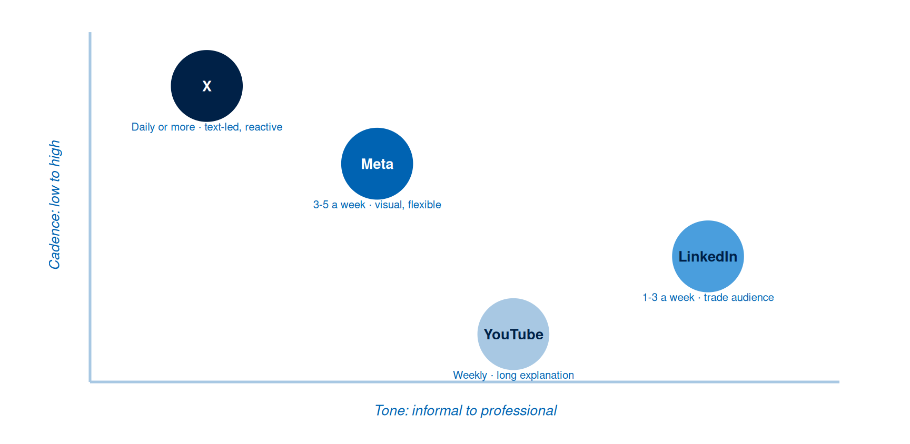

Week 8: Social Media Platforms and Theory
Paid search waits for a query. Social platforms wait for nothing: the feed is already moving, and your post arrives beside a friend’s holiday photo, a news headline, and four other advertisers competing for the same thumb.
That changes what a campaign has to earn. Search advertising earns a click by matching an intent the person already had. Social advertising earns attention first, and only then a click. Two theories explain how that attention is won, and both give you decisions grounded in evidence you can defend.
This week opens a new three-week block. Weeks 8, 9, and 10 follow one brand across the channels that operate on relationships: social platforms this week, direct messaging in Week 9, and creator partnerships in Week 10. The worked example throughout is Reefkind, a Maldivian reef-safe sunscreen brand selling to visitors and to local dive centres.
The artefact you produce is a one-week social plan: platform, format, message, asset, cadence, and primary metric, with a written rationale anchored in theory.
This Week’s Lecture
Lecture Social Platforms & Theory
Discussion
1 Introduction & Recall
⏱ 10 min
Aims; quick poll on platform formats and cadence across Meta, X, YouTube, and LinkedIn.
Acquisition
2 Social Media Marketing: Platforms & Theory
⏱ 30 min
Meta, X, YouTube, and LinkedIn overview; creative and disclosure basics; cadence and tone; TAM (ease, usefulness, trust) and SIP (relationship, reply quality, time); simple evaluation using reach, engagement quality, and click or conversion.
Practice
3 Guided Whole-Class Discussion
⏱ 15 min
Whole-class mini-case: choose one platform and message; state cadence and one TAM or SIP justification.
Assessment
4 Attendance & Exit Check
⏱ 5 min
One-minute exit check: write one theory-anchored action you will try next week.
Learning Objectives
After studying this chapter, you should be able to:
- Explain the four platform environments named in this module (Meta, X, YouTube, LinkedIn) in terms of dominant format, cadence expectation, and tone.
- Apply the Technology Acceptance Model to a social campaign decision by naming the ease, usefulness, and trust barrier a post has to clear.
- Apply Social Information Processing theory to explain how a brand builds relationship through reply quality and accumulated time on a platform.
- Write creative that meets platform disclosure requirements for paid partnerships and advertising.
- Set a posting cadence and tone appropriate to the platform and justify both by reference to theory.
- Evaluate a social campaign using reach, engagement quality, and click or conversion, and distinguish each from platform activity counts that measure nothing.
- Apply the evidence framework to social decisions: classify platform choice, cadence, and format as evidence-based, inferred, or assumed.
Why Two Theories Beat One Checklist
A checklist of platform tips ages badly. Formats change, the feed algorithm is rewritten, and last year’s advice about optimal posting times becomes this year’s superstition. Theory ages better. It describes the person, and people change more slowly than interfaces.
Two theories carry this week. The first explains whether someone will act on your post at all. The second explains why a brand that has been present for six months outperforms an identical brand that arrived last Tuesday.
The Technology Acceptance Model: Ease, Usefulness, Trust
The Technology Acceptance Model holds that adoption of any technology is driven by two beliefs: perceived usefulness, meaning the degree to which a person believes using it will improve their outcome, and perceived ease of use, meaning the degree to which they believe using it will be free of effort (Davis, F. D., 1989). Later work in commercial settings adds trust as a third belief, since online exchange asks the person to accept risk from a party they have never met.
Read those three as barriers standing between your post and the action you want.
Ease is the friction between the thumb and the outcome. A post asking someone to visit a website, find the shop page, choose a variant, and register an account is asking for four decisions. Each one loses people. When Reefkind moved its stockist list from a PDF link to a native map inside the post caption, the same creative and the same audience produced more shop visits, because two steps disappeared.
Usefulness is the reason the post is worth the attention it costs. A photograph of a sunscreen tube is a product shot. A ninety-second clip explaining which UV filters bleach coral, and which leave it alone, is useful to a diver who buys nothing at all.
Trust is the belief that the claim survives scrutiny. “Reef-safe” is a claim anyone can print. A named lab test, a visible ingredient list, and a dive centre willing to be quoted are what turn it into something a buyer will risk money on.
TipTheory-to-decision bridge
Before you write a post, name which of the three barriers is actually blocking your audience. A campaign whose problem is trust will waste its budget simplifying a checkout that already works. Reefkind’s barrier is trust, because visitors have encountered “reef-safe” on products that were later shown to bleach coral. So the plan leads with lab evidence and dive-centre voices, and treats ease as a landing-page fix that never has to carry the campaign.
Davis’s original model runs external variables into perceived usefulness and perceived ease of use, with ease also shaping usefulness directly; both feed attitude, then behavioural intention, then actual use. Figure 2 keeps that causal shape rather than flattening it into three independent checkboxes: ease still feeds usefulness, and all three beliefs converge on the same intention before an action follows.
Identify the belief that is actually weak before choosing the creative.
The Four Platform Environments
The module works with four platform environments. Each has a dominant format, a cadence expectation, and a tone, and those three together decide whether your creative fits or reads as an import from somewhere else.
Meta (Facebook and Instagram) is the broadest reach in the Maldivian market and the most format-flexible: feed image, carousel, Stories, and Reels. Facebook still carries community groups, which matter for reaching local dive centres and shopkeepers. Instagram carries visual discovery. Cadence expectation is high, three to five posts a week, and tone sits between conversational and produced.
X is fast, text-led, and reactive. Post copy runs to 280 characters, threads extend a claim, and the platform rewards responsiveness to a live conversation. Cadence is the highest of the four, daily or more, and tone is direct and informal. For Reefkind, X is where a marine-biology thread about UV filters can travel beyond the follower list.
YouTube is where the long explanation lives, alongside Shorts for discovery. It is search-driven as much as feed-driven, so a video answering “is reef-safe sunscreen actually different” keeps earning views months after publication. Cadence is the lowest of the four, weekly or fortnightly, and tone is instructional.
LinkedIn reaches the trade: resort procurement managers, dive centre owners, and distributors. Cadence is modest, one to three posts a week, and tone is professional without being stiff.

NoteFree Tool: Meta Ads Guide
The Meta Ads Guide publishes the current specification for every ad format and placement across Facebook, Instagram, and Threads: aspect ratio, resolution, file type, and the character limits for primary text, headline, and description. It opens without a login or an advertising account.
What it does in this chapter: Activity 2 of the tutorial has you read the live specification for two formats and record what it says, so your plan commits to formats your assets can actually satisfy.
A note on Meta Creative Hub: Creative Hub is Meta’s mockup workspace, and it sits inside Ads Manager behind a business account login. Where your group has that access, build the mockup there. Otherwise the Ads Guide gives you the same specification numbers, and Penpot from Week 3 builds the mockup.
NoteFree Tool: X Ads Creative Specifications
X’s creative ad specifications list the aspect ratios, file requirements, and copy limits for image, video, and carousel ads, alongside the 280-character limit that applies to post copy. No account is required to read them.
What it does in this chapter: X is the second platform in Activity 2. Read the live specification: aspect ratio support in particular has changed more than once, and a plan built on last year’s numbers produces assets that get rejected or cropped.
Creative and Disclosure Basics
Two disclosure obligations apply to the work you plan this week, and the platforms enforce both.
Paid partnership disclosure. When a creator posts about your brand in exchange for payment, free product, or any other consideration, that post must be labelled. Meta and Instagram provide a branded content tag; X and YouTube have equivalents; and the common written convention is #ad placed where a reader sees it without expanding the caption. Burying disclosure at the end of a paragraph of hashtags satisfies nobody, and platforms increasingly detect and demote it. Week 10 develops this properly when you select creators.
Advertising disclosure. A promoted post carries a platform-applied label. Your obligation sits in the creative: claims in a paid post are advertising claims, and “reef-safe” or “dermatologically tested” needs the evidence to exist before the post runs.
Two further creative rules come from the platform environments themselves. Design for sound-off, since most feed video is watched muted, so burned-in captions carry the argument. And design for the crop: a 16:9 asset placed in a 9:16 Story loses a third of its frame, so the claim belongs in the middle of the frame.
Worked Example: Reefkind’s One-Week Plan
Reefkind sells a reef-safe mineral sunscreen made in the Maldives. The Week 2 canvas puts the campaign at the Knowledge-to-Preference transition, and names two segments: visiting divers and snorkellers who buy on the island, and dive centres that stock products for guests.
The blocking barrier is trust. Visitors have met the phrase “reef-safe” on products later shown to contain oxybenzone, so the plan leads with evidence and holds the lifestyle imagery back.
For the consumer segment, Reefkind runs Meta as the primary platform, because it reaches both the visitor audience and the island community, and it supports the vertical video the claim needs. The week carries four consumer posts: a Reel showing the ingredient list read aloud beside the lab certificate, an X thread setting out which UV filters bleach coral and which leave it alone, a carousel comparing that same filter chemistry in more depth, and a Story sequence naming the three islands where the product is now sold. Cadence is four posts across seven days, with replies handled inside twenty minutes for the first three hours after each post goes live.
For the trade segment, LinkedIn carries one post: a short case note on what changed for a dive centre after switching its retail shelf, aimed at procurement readers.
The primary metric is saves on the ingredient Reel, since a save is the signal that maps to a purchase decision a visitor makes later, in a shop, without the phone in hand. Reach is the diagnostic metric, and enquiries from the LinkedIn post are the trade outcome.
The rationale in theory terms: the campaign attacks the trust belief from the Technology Acceptance Model with third-party evidence, and it invests in reply speed because Social Information Processing predicts that relational depth accumulates through exchange over time, and no single well-funded asset shortcuts it.
Social Information Processing: Relationship, Reply Quality, Time
Social Information Processing theory addresses a puzzle from early online communication research. Text-based channels strip out tone, facial expression, and posture, so early theorists predicted that online relationships would stay shallow. They were wrong. Walther showed that people form relationships of comparable depth online, given one additional ingredient: time (Walther, J. B., 1992). Cues arrive more slowly through text, so relational development takes more exchanges to reach the same depth, and it does reach it.
Three implications follow for a brand account.
Relationship accumulates. Six months of consistent presence is an asset a better-funded competitor will need six months to match.
Reply quality carries disproportionate weight, because replies are where the relational cues live. A comment answered in one specific, informative sentence does more relational work than three scheduled posts. A comment answered with “Thanks for reaching out! DM us 😊” does none.
Time is the input the theory insists on. Cadence matters less as a number than as a signal of continued presence.
Social Information Processing gives you a defence against the most common social media budget error: spending everything on production and nothing on the hours after publication. Reefkind’s plan reserves twenty minutes a day for replies, because a diver asking “does this work under a 3mm wetsuit?” is a Conviction-stage buyer whose question, answered well and in public, also answers it for everyone who reads the thread later.